Щелчок по картинке — в полный размер (и ×2, ×4). Цикл Аниматрицы в Zerkalius Code на сцене «1» — что нашлось, 2026-09-24. Кратко то же — в борт-журнале (v0.089, запись после Code 35.55, и словарь).
Коротко. Волна Аниматрицы (без нулей) — это XOR «с накоплением» по строкам. Поэтому всё решают степени двойки: цикл 128 проходов при 128 строках, у каждой строки свой период, картинка складывается из ромбов, и размер ромбов виден по двоичной записи номера прохода. Нули добавляют только разгон — к 65-му проходу они вымирают.
Журнал Аниматрицы (кнопка ⏺ Журнал в Code) со сцены «1» дал текст: 128 строк × 257 символов из «1», «0» и пробелов, проход 15. Правило волны детерминированное: каждая строка переписывается по уже переписанной строке над ней — два одинаковых символа → пробел, символ и пробел → символ, два разных → верхний. Дальше всё досчитано вне страницы тем же правилом по всем проходам. Главный вывод подтвердила сама страница на 667-м проходе: «🔁 цикл: период 128, повтор после 65-го прохода».
Нулей было 976 — они протекают вниз столбиками и гасятся друг о друга; к 65-му проходу их нет. Дальше — чистый цикл: проход 193 = проход 65, символ в символ. Если заменить нули единицами, цикл 128 идёт сразу.
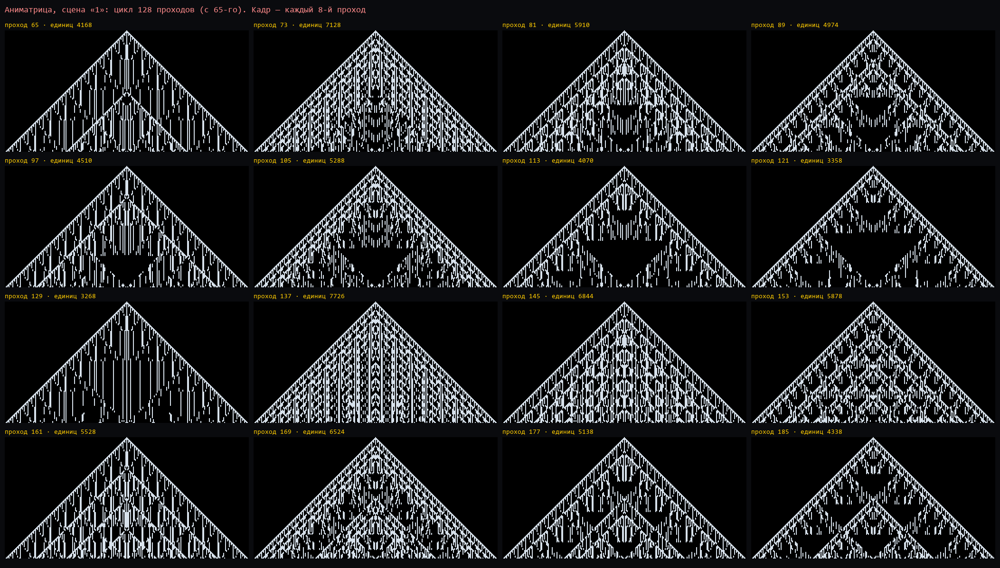
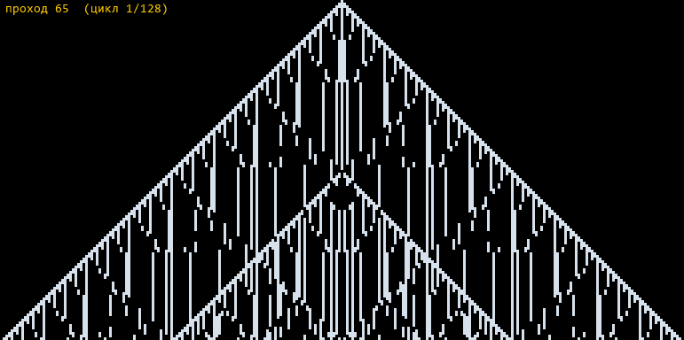
Без нулей проход делает строку i равной XOR всех строк над ней и её самой. Через k проходов
строка собирается из строк выше с коэффициентами C(i−j+k−1, k−1) по модулю 2 — треугольник Паскаля по чётности. По
теореме Лукаса (1878) через 2m проходов, если 2m ≥ числа строк, остаётся только сама строка.
Отсюда период — ближайшая степень двойки не меньше числа строк: 128 строк → 128, 100 → 128, 200 → 256.
Кадр через k проходов после 65-го — это XOR копий 65-го кадра, сдвинутых вниз на все d, у
которых нет общих двоичных единиц с k−1 (d & (k−1) = 0). Пример: проход 155 (он же 667-й),
k = 90, k−1 = 1011001 → сдвиги 0, 2, 4, 6, 32, 34, 36, 38; проверено — совпадает символ в символ.
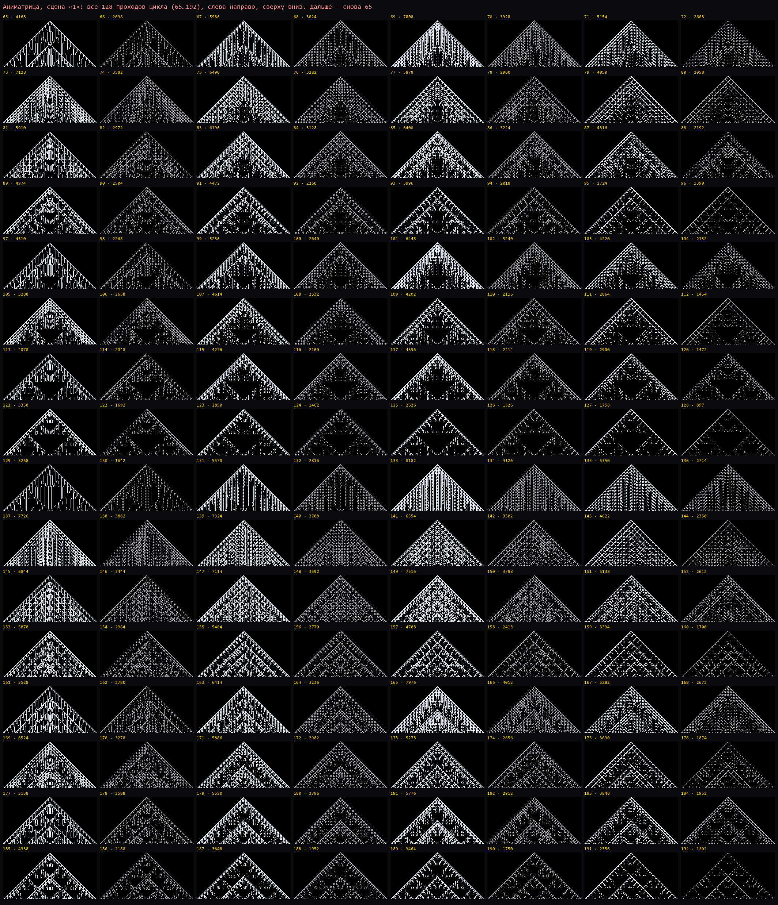
| строки | 0 | 1 | 2–3 | 4–7 | 8–15 | 16–31 | 32–63 | 64–127 |
|---|---|---|---|---|---|---|---|---|
| период | 1 | 2 | 4 | 8 | 16 | 32 | 64 | 128 |
Период строки — ближайшая степень двойки больше её номера (Лукас по одной строке: ей нужны только строки выше). Треугольник — часовой механизм: каждая полоса вдвое медленнее верхней, общий период — период нижней. В Code: ▤ Полосы периодов в «Виде».
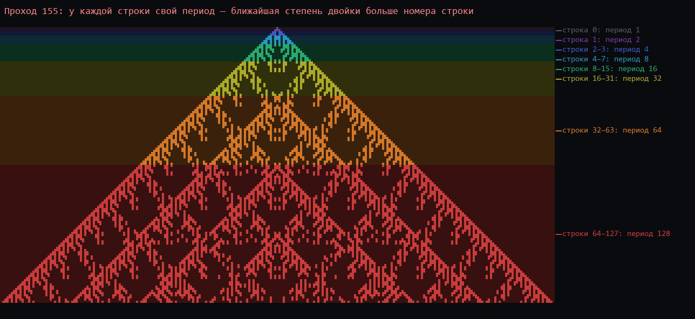
Картинка почти повторяется при сдвиге по диагонали: (16 строк, ±16 символов) — 89,5% клеток, 32 — 90%, 8 и 24 — около 70%, мимо на один символ — 59% (уровень случайности). Ромбы — 32 строки высотой, соседние сдвинуты на 16. Причины: Правило 90 ведёт узор ровно на символ за строку (диагонали под 45°), а треугольник Серпинского сложен из своих копий, сдвинутых по диагонали. В Code: ◇ Ромбическая сетка.
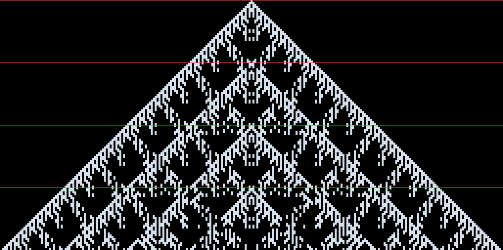
Каждый нулевой разряд 2j в двоичной записи k−1 добавляет копию со сдвигом 2j и включает ромбы
этого размера. Проход 977 (k = 16, 0001111) — три размера сразу: 16, 32, 64. Проход 129 (0111111)
— только 64. Проход 155 (1011001) — 32 плюс утолщения. Проход 192 (1111110) — крупных нет. В Code:
сетка с шагом «авто — по проходу» рисует включённые размеры сама, с легендой.
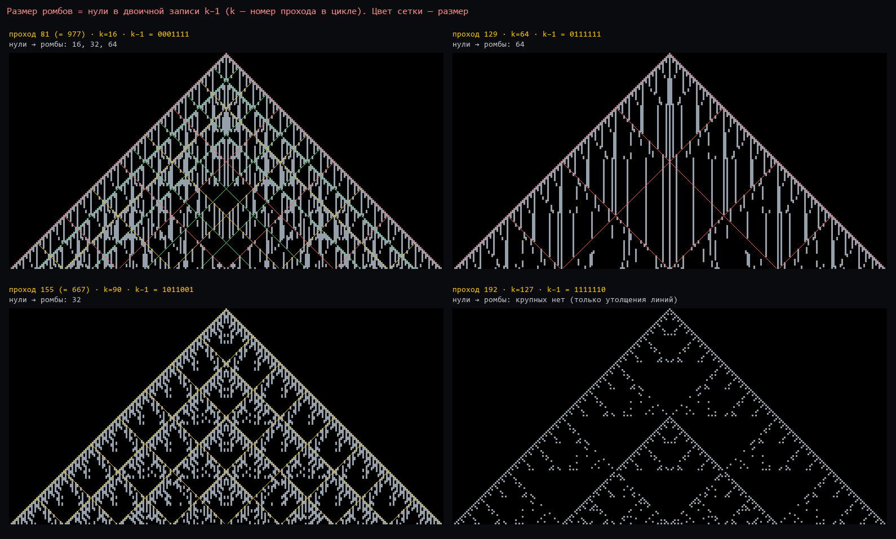
На проходе 155 — 21 целый ромб; с верхним совпадают на 83–97% (на средней вертикали — 97%). За весь цикл ромбов 2688 (21 место × 128 проходов), разных 1541: 1206 встречаются один раз, 130 — по 4, 128 — по 6, два почти пустых — по 20. Верхний ромб (строки 0–32) повторяется через 64 прохода, у него 64 разных кадра.
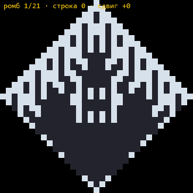
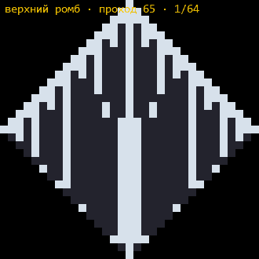
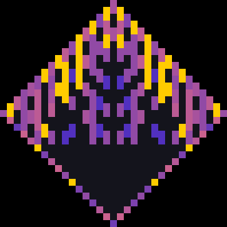
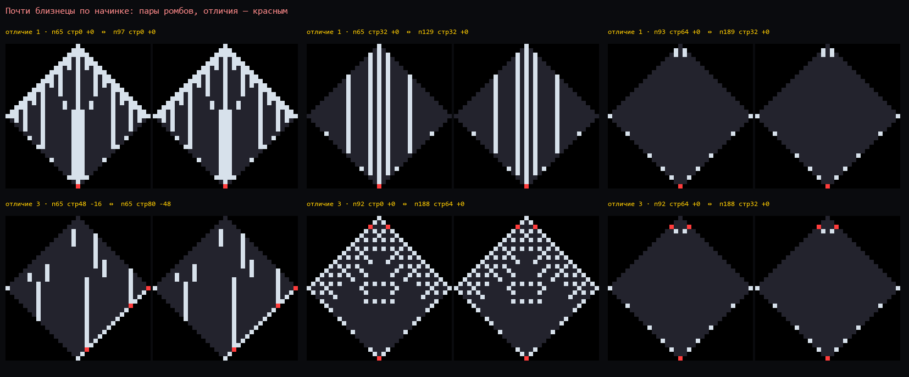
Идея пользователя: свернуть каждый ромб в один бит так, чтобы зеркальные близнецы получали одинаковый бит, а у симметричного ромба бит зависел от соседей через ось. Обоим условиям отвечает чётность ромба — XOR всех его клеток: у близнецов единиц поровну — бит один и тот же; в симметричном ромбе каждая клетка равна своей соседке через ось, пары гасят друг друга в XOR, и остаются только клетки на самой оси. А XOR — родная операция волны.
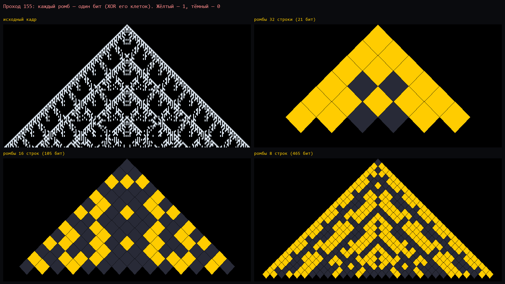
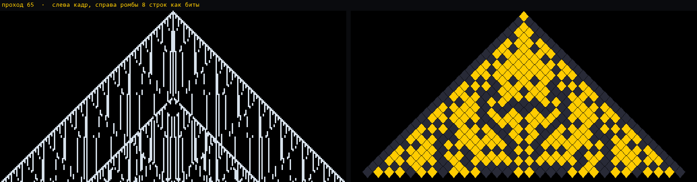
Ромбы из ромбов. Треугольник из ромбов-битов лежит в той же геометрии, что и исходный (бит через клетку, как у Правила 90), поэтому его можно свернуть ещё раз — и ещё. Лестница с ромбами высотой 4: 128 строк → 62 → 29 → 13 → 5 → 1.
| ступень | 1 | 2 | 3 | 4 | 5 |
|---|---|---|---|---|---|
| строк · бит | 62 · 1953 | 29 · 435 | 13 · 91 | 5 · 15 | 1 · 1 |
| период | 128 | 128 | 128 | 128 | 128 |
| разных кадров за цикл | 128 | 128 | 128 | 91 | 2 |
000111101111, без единого нарушения. Но 128 на 12 не делится — на стыке циклов ритм сбивается
(по кругу совпадение 94%). Откуда 12 — разобрано (v0.015):
d & (k−1) = 0 (закон «кадр — XOR сдвинутых копий»);
совпадает на всех 128.1 + x¹² = (1+x)⁴·(1+x+x²)⁴. Множитель (1+x)⁴ даёт ритм 4, а
1+x+x² — ритм 3 (кубические корни из единицы): вместе 12. Строк всего 128 — ряд обрывается, отсюда сбой на
стыке циклов.111101111000, повторённый
через 12. Складывается по ступеням: после первой ступени столбец повторяется через 4 (0111), на второй-третьей
ритм смешанный, с четвёртой — ровно 12: четвёрка первой свёртки × тройка, набегающая дальше. Тройку даёт именно ромб:
одномерная модель (только строки, окно 5 строк с шагом 2) даёт шаг 5, а не 12 — нужен захват соседних столбцов и
перекрытие соседних ромбов по краям. Волна этот след лишь «читает»; чистый D с шагом 12 выходит только при отсчёте от
начала цикла (65-й проход) — от шума, одной точки или других кадров D не периодичен. Вопрос закрыт: остальное —
комбинаторика лестницы.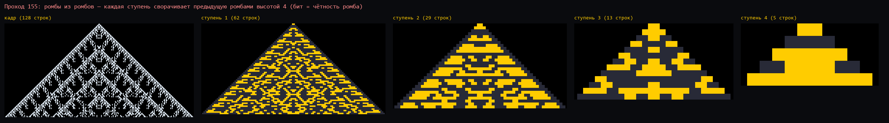
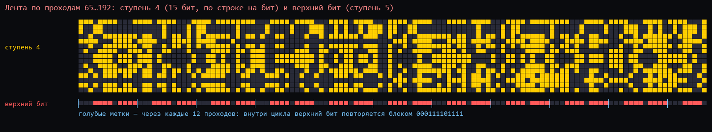
Идея пользователя: на экране строки идут по кругу — снизу треугольник (начало текста, строка 0 — вершина), сверху
трапеция (конец текста); они касаются в центре. Отразить нижний треугольник вверх через эту точку (строка i →
строка 127−i) и сложить XOR с тем, что там есть. Треугольник симметричен слева направо, поэтому отражение через
центр — то же, что отражение вверх. Сделано для верхней половины (строки 64–127), нижняя не тронута.
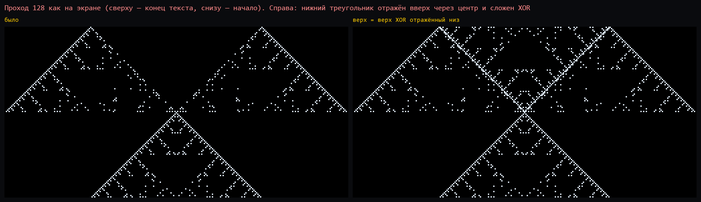
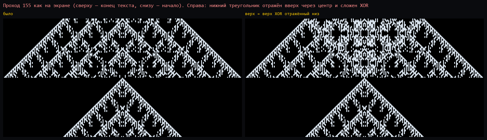
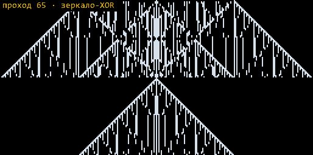
И обратно: верх вниз, в противоположные стороны. Боковые части верхней трапеции отражены через центральную точку (поворот на 180°): верхний левый угол ложится в пустоту справа от нижнего треугольника, верхний правый — слева; XOR с нижней половиной. И вариант «оба сразу» — каждая половина XOR отражённая другая, от исходного кадра.
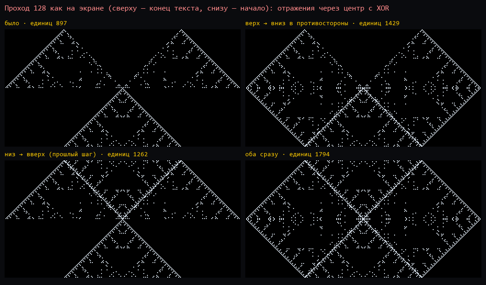
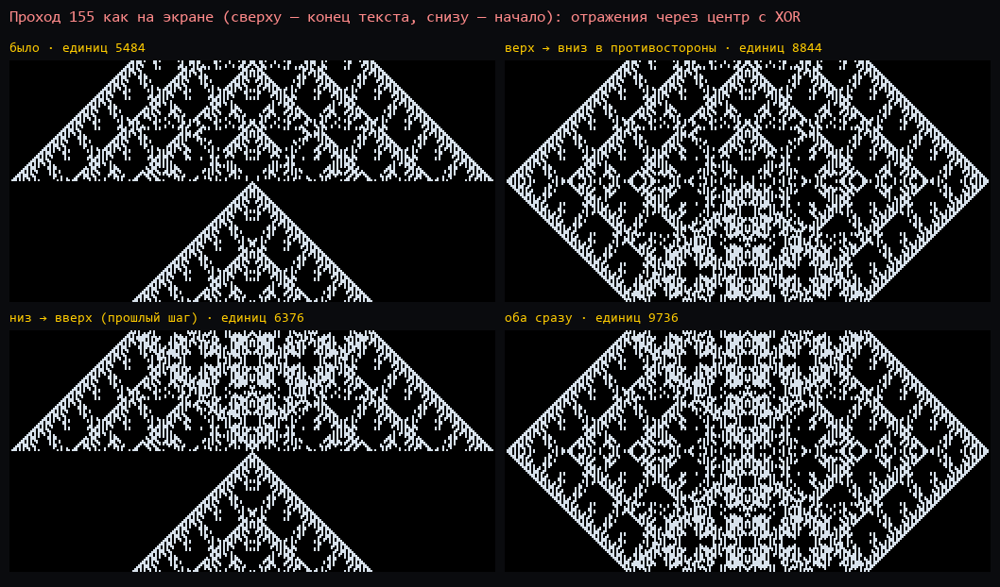
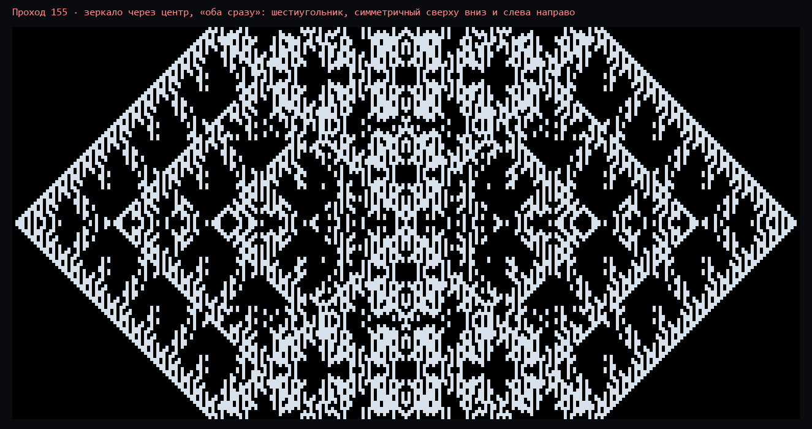
Слово пользователя, глядя на треугольник с ромбической сеткой: «почти надпись». Проверили буквально: каждый ромб сетки — буква, одинаковые ромбы — одна и та же буква, зеркальный ромб — та же буква строчной. Ромбы 16 строк, проход 155.
ряд 0 (край): Ш | а б · а б · а б · а б · а б · а слово «аб», длина 2 ряд 1: А Э | д е в з · д е в з · д е в слово «девз», длина 4 ряд 2: Б Д Ю | г ж и Л · г ж и Л · г слово «гжиЛ», длина 4Длина слова ряда
e — ближайшая степень двойки больше e+1: 2, 4, 4, 8, 8, 8, 8, 16, …; слово начинается не
позже уровня 2e+1. Проверено на всех 128 проходах цикла (ромбы 8 строк — ряды 0–6, ромбы 4 — ряды 0–14), без
исключений. Это тот же закон, что «у каждой строки свой период» (раздел 4), только вдоль стороны: у треугольника
Серпинского стороны равноправны с основанием, и чем дальше ряд от края, тем медленнее его часы.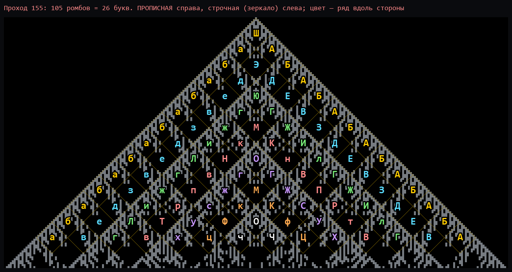
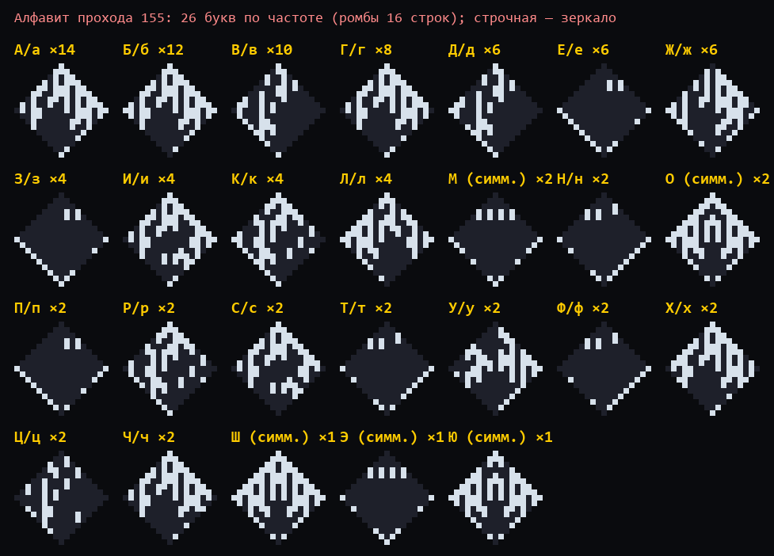
Откуда нули: генератор «Правило 90» пишет внутри треугольника «0» там, где клетка пустая, а «Обрезать фон» превращает в пробелы только то, что снаружи; ширина — 2·строк+1 (у 128 строк — 257, как в журнале сцены «1»). Тем же способом построены треугольники на 50, 64, 100, 128, 200, 256 строк (сид «1») и прогнаны волной с нулевого прохода:
| строк | 50 | 64 | 100 | 128 | 200 | 256 |
|---|---|---|---|---|---|---|
| период | 64 | 64 | 128 | 128 | 256 | 256 |
| нули вымерли, цикл с прохода | 33 | 33 | 65 | 65 | 129 | 129 |
| нулей в начале | 2083 | 3367 | 8749 | 14197 | 36247 | 58975 |
Шире (v0.006): 17 прогонов — другие правила, сиды, без обрезки фона. Период всегда P — ближайшая степень двойки не меньше числа строк: при любом правиле, сиде, с обрезкой и без, и даже когда нули не вымирают. А вот «половина + 1» — не общий закон, а свойство треугольника Серпинского (правило 90 или 18 из одной точки, с обрезкой):
| треугольник | 64 строки: цикл с | 100 строк: цикл с | нули |
|---|---|---|---|
| правило 90 и 18, сид 1 | 33 (= P/2 + 1) | 65 (= P/2 + 1) | вымирают |
| правило 150, сид 1 | 40 | 80 (оба — 5/8 P) | вымирают |
| правило 30, сид 1 | 10 | 11 | вымирают |
| правило 110, сид 1 | 8 | 8 | вымирают |
| правило 90, сид 11 | 18 | — | вымирают |
| правило 90, сиды 101, 1101, 10011 | 33, 18, 18 | — | живут в цикле |
| правило 90 и 30, без «Обрезать фон» | 32 (= P/2) | 64 (= P/2) | живут в цикле |
Нули вымирают не всегда: при сидах 101, 1101, 10011 и без обрезки фона они живут внутри цикла, а период всё равно P. Без обрезки цикл начинается ровно на P/2.
Правило 150 вблизи (100 строк). Исходный треугольник почти весь из нулей (7348 синих против 2652 единиц). За первые 10 проходов нулей остаётся 502, к 40-му — 16, а дальше несколько одиночек держатся до 80-го: они и тянут разгон до 5/8 периода. С 80-го — чистый цикл 128 (проход 208 = проход 80). У цикла правила 150 свой рисунок — сквозные вертикальные «стволы» и треугольники по бокам, а не дышащий вложенный треугольник, как у правила 90.
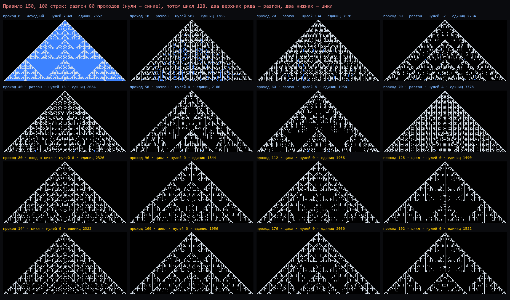
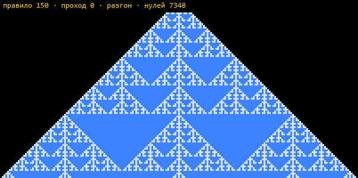
Правило 30 вблизи (100 строк) — полная противоположность. Правило 30 хаотическое: в исходном треугольнике нулей и единиц почти поровну (4804 и 5196), без правильного рисунка. Нули гибнут быстро: 3360 после первого прохода, 453 после пятого, к 11-му — ни одного. Разгон — всего 11 проходов. Цикл на вид — шум без треугольников Серпинского, но строгий: период ровно 128, проход 139 = проход 11 символ в символ (4927 единиц и там, и там). Левый край треугольника правила 30 и в цикле держит правильные косые полосы, правый — хаос.
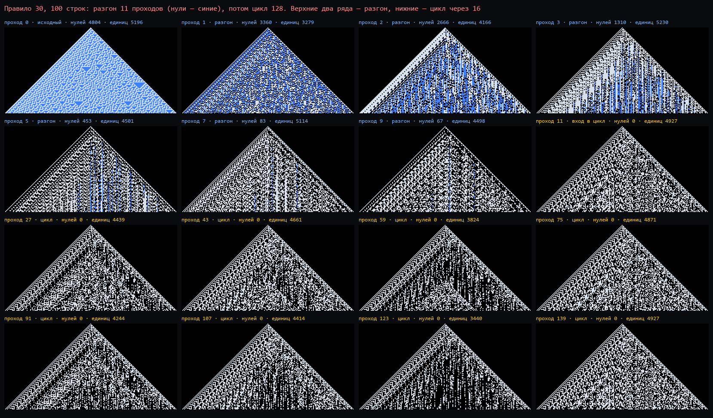
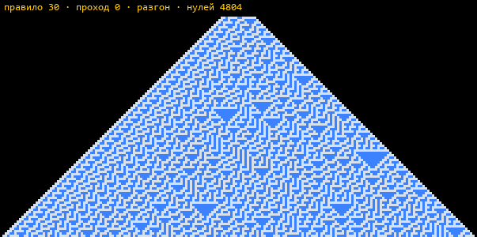
Правило 110 вблизи (100 строк). Из одной точки правило 110 растёт только влево, и треугольник выходит половинкой — с вертикальным правым краем. Нулей в начале 2174 при 2876 единицах; разгон самый короткий из всех — 8 проходов (1682 нуля после первого, 234 после шестого, к 8-му — ни одного). Дальше — цикл ровно 128, проход 136 = проход 8 (по 2550 единиц). Форма треугольника на период не влияет: он всё равно задан числом строк. Зеркальной симметрии у половинки, понятно, нет — «⫼ Ось симметрии» здесь ничего не покажет.
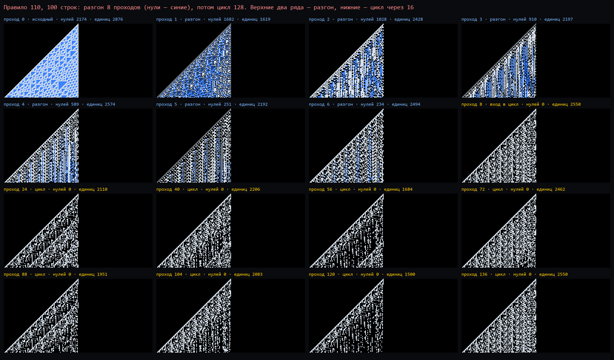
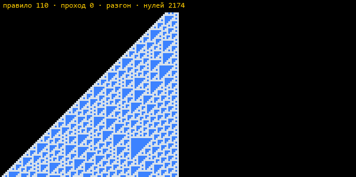
Проверка пользователя: «Правило 90», 50 строк, без «Обрезать фон» — весь прямоугольник заполнен символами, вне треугольника сплошные «0», пробелов нет вовсе. Разгон 32, период 64 (как и предсказано: P = 64, без обрезки цикл с P/2). Но в цикле единиц почти не остаётся — от 1 до 50 на кадр, и все они в одном центральном столбце, под сидом; нули живут. С обрезкой — наоборот: нули вымирают полностью, единицы живут. Разгадка закрывает оба старых вопроса.
Почему разгон именно такой — разобрано в разделе 9¾: без обрезки он считается точно и выходит P/2, у Серпинского с обрезкой — в разделе 12 (не всегда P/2 + 1!), у правила 150 (5/8 P) формулы пока нет.
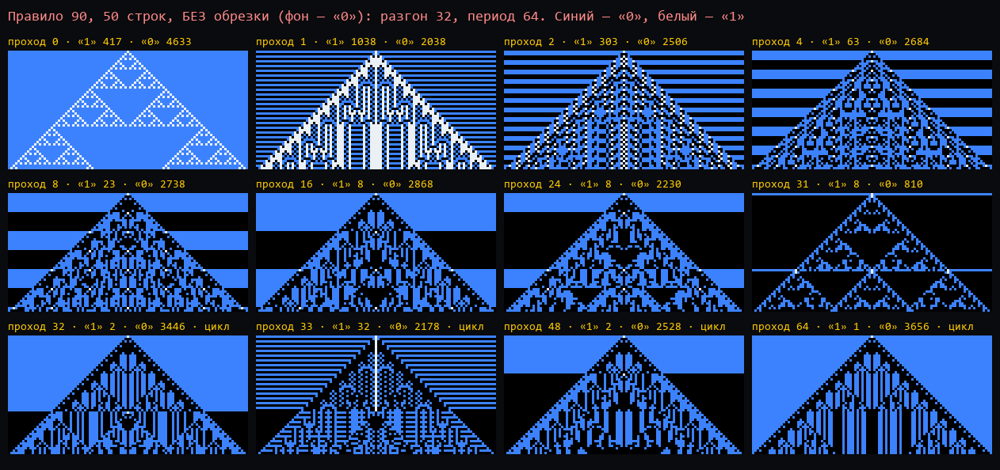
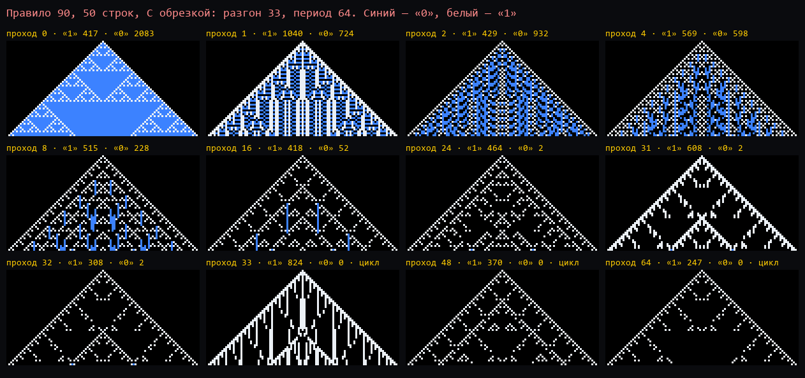
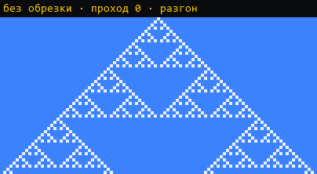
Раздел 9½ показал, что происходит: столбцы живут порознь, метка верхней клетки заливает столбец, дальше чистый XOR. Это было замечено на прогонах. Ниже — почему иначе и быть не может, при любом правиле, сиде и любых нулях.
1/(1+z) над GF(2).h — половина периода строки r (период
строки — ближайшая степень двойки больше её номера, раздел 4). Тогда
(Phx)r = xr ⊕ xr−h, потому что
(1+z)−h ≡ 1 + zh с точностью до строки r. Если бы строка
r была пуста на всех проходах, пустой на всех проходах была бы и строка r−h, и так вниз до
строки 0 — а она непуста всегда. Значит строка r хоть раз, да непуста.Когда нули вымирают — оттуда же: нули остаются в цикле ровно в столбцах с меткой «0». С обрезкой верх столбца — край треугольника, а он «1», кроме столбцов под самим сидом. Значит нули вымирают тогда и только тогда, когда в сиде нет нуля: 1 и 11 — вымирают, 101, 1101, 10011 — живут, и живут именно в столбцах под своими нулями. Без обрезки строка 0 — сплошные «0», кроме сида, поэтому выживают нули, а единицы остаются только в столбце под сидом (те самые «от 1 до 50 единиц на кадр» из раздела 9½).
Разгон без обрезки — ровно P/2, и это теперь считается. Столбец на отклонении d от центра: сверху
d клеток сплошного фона «0», под ними край треугольника «1» — первая чужая клетка. В XOR-мире метки «0»
сплошной фон — это сплошные единицы, и строка d−1 на проходе k равна
C(d−1+k, k) по модулю 2; по теореме Куммера это нечётно ровно тогда, когда в двоичной записи
k & (d−1) = 0. Значит верхняя чужая клетка столбца гибнет на проходе
min{k ≥ 1 : k & (d−1) = 0} — совпало для всех 676 столбцов на прогонах в 50, 64, 100 и 128 строк.
Максимум берётся там, где d−1 = 2j−1: тогда k обязан быть кратен
2j, то есть равен d. Наибольшее такое d ниже числа строк — это
P/2, и разгон равен ему.
Проверка расчётом заодно подтвердила и то, на чём всё держится: начало цикла — это в точности тот проход, на котором гибнет последняя чужая метка (совпало на всех прогонах: 33, 33, 65, 65 у Серпинского, 40 и 80 у правила 150, 32, 32, 64 без обрезки). Разгон — это ровно время жизни нулей, а не что-то сверх него.
Классика: Лукас (1878), Глейшер (1899: в строке n треугольника Паскаля нечётных чисел 2 в степени «число единиц в двоичной записи n»), Серпинский (1915), Вольфрам с соавторами (1983–84: Правило 90 и линейные клеточные автоматы). Своё у Zerkalius — три символа и правило «два разных → верхний»: волна нелинейна, отсюда разгон с вымиранием нулей. В литературе такого варианта не встречалось, но утверждать, что его никто не изучал, нельзя.
Закрыто (v0.019, раздел 9¾): почему период не меняется от нулей — доказано: чужие метки гибнут за конечное число проходов, дальше столбец идёт чистым XOR, и нелинейность живёт только в разгоне. При каких сидах нули вымирают — тогда и только тогда, когда в сиде нет нуля. Разгон без обрезки — ровно P/2, с выводом по теореме Куммера.
Осталось: точная формула разгона у Серпинского с обрезкой — найдена и для рекордсмена выведена в разделе 12 (открыта только верхняя граница); у правила 150 (5/8 P). Известно, где
искать: последними держатся не самые глубокие клетки, а вполне определённые — у Серпинского на отклонении P/4 от центра,
у правила 150 на отклонении P/8 около строки 3P/4.
Серпинский по правилу 90 (сид 1, фон обрезан), от 64 до 1024 строк, прогнан через весь цикл вне страницы — тем же правилом волны и той же переписью ромбов, что в Треугольнике (сверено с ним: 64 строки, проход 5, ромб 16 — 21 ромб, 15 рисунков, 9 букв; 128 строк, ромб 32 — те же 1541 разных рисунков, что в разделе 7).
| строк N | 64 | 100 | 128 | 256 | 512 | 1000 | 1024 |
|---|---|---|---|---|---|---|---|
| период P | 64 | 128 | 128 | 256 | 512 | 1024 | 1024 |
| цикл с прохода | 33 | 65 | 65 | 129 | 257 | 513 | 513 |
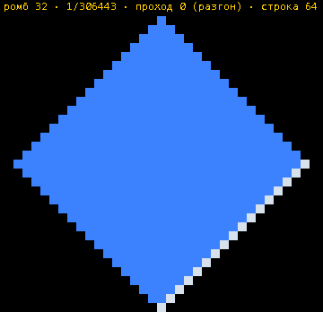
archive\_issledovanie-treugolnik-1024\, вместе с таблицей и скриптом расчёта.Столбцы живут независимо (раздел 9½), клетка видит только клетки выше в своём столбце — значит, у каждой клетки треугольника своё время жизни нуля τ, и оно не зависит от того, сколько строк ниже. Посчитано для всех клеток до 1024 строк, и прямым прогоном до повтора — для каждого N от 3 до 139 и выборочно до 512.
Формула. Треугольник из N строк (правило 90, сид 1, фон обрезан) входит в цикл на проходе 2m + 1, где 2m — наибольшая степень двойки, не превышающая 2(N − 2)/3 (при N ≤ 4 — проход 1). Проверено для всех N от 2 до 1024 — без исключений.
| N | 50…64 | 65…97 | 98…128 | 129…193 | 194…256 | 257…385 | 386…512 | 513…769 | 770…1024 |
|---|---|---|---|---|---|---|---|---|---|
| период P | 64 | 128 | 128 | 256 | 256 | 512 | 512 | 1024 | 1024 |
| цикл с прохода | 33 | 33 | 65 | 65 | 129 | 129 | 257 | 257 | 513 |
Поправка к разделам 9 и 11. «Разгон = P/2 + 1» верно только для N от 3·2m−2 + 2 до 2m — верхней четверти каждого удвоения. В остальных трёх четвертях (например, 65…97 строк при P = 128) цикл начинается вдвое раньше, с P/4 + 1: самая долгоживущая клетка ещё не вошла в треугольник. Прежние прогоны (50, 64, 100, 128, 200, 256, 512, 1000, 1024 строки) все случайно попали в «верхние четверти», поэтому закон выглядел всеобщим.
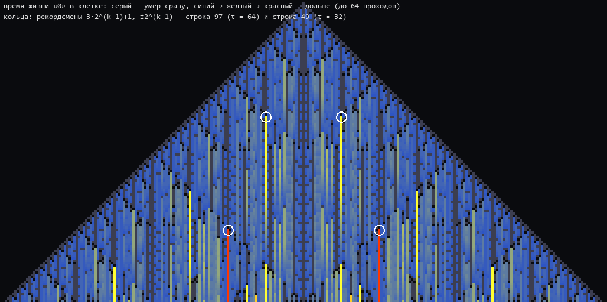
Почему рекордсмен именно такой — вывод (v0.022). Столбец с отступом a = 2k−1, сверху край
треугольника «1» (строка a), глубина — от неё вниз.
Σ C(m+k−1, k−1) по m = 1…2a = C(2a+k, k) − 1 (правило хоккейной клюшки): она непуста ровно
тогда, когда C(2a+k, k) чётно, а по Куммеру это k & 2a ≠ 0. Первое такое k — само 2a.столбец a = 4, глубина 0…11 (· — пробел) проход 1: блок 1111 1111, щит «·», под ним рекордсмен «0» п. 0: 100000001000 п. 3: 11··11···0·· п. 6: 1·1······00· п. 1: 11111111·0·0 п. 4: 1···1····000 п. 7: 11·······0·· п. 2: 1·1·1·1··00· п. 5: 1111·····0·0 п. 8: 1········000 п. 9: 111111111111 — щит непуст, ноль погиб
Отсюда и формула целиком, если никто не живёт дольше рекордсменов: треугольник из N строк содержит рекордсмена τ = 2k при 3·2k−1 + 1 ≤ N − 1, то есть 2k ≤ 2(N − 2)/3. Открыто одно: общее доказательство, что никакая другая клетка не живёт дольше (верхняя граница) — пока это проверено сплошным расчётом всех клеток до 1024 строк. (Первая догадка v0.021 — «сплошная лесенка 1 0 1 0 над рекордсменом» — была неверна: над ним не лесенка, а сплошь нули.)